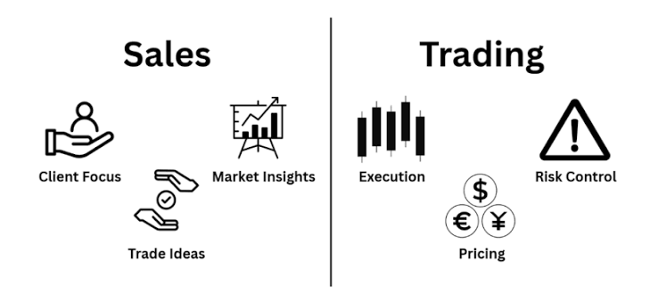

Sales & Trading
Understand market making, liquidity provision, equity and fixed income execution desks, and institutional trading flow.

Sales & Trading is a division that facilitates buying and selling of financial securities for institutional clients, market-making, execution, and providing liquidity. Salespeople build relationships with clients and execute trades, while traders manage risk and provide liquidity for the firm.
The environment is fast-paced and real-time, with professionals making decisions in seconds based on market movements and news. Sales & Trading is one of the most dynamic and high-energy careers in finance.
Core Functions
• Sales: Pitching investment ideas and executing trades for clients.
• Trading: Buying and selling securities to facilitate client orders and manage
risk for the firm.
The sales team focuses on client relationships, understanding client needs, and providing market intelligence. The trading team focuses on execution, market-making, and managing the firm's risk exposure.
• Sales Team: Pitching investment ideas, managing institutional client accounts, relaying orders.
• Trading Team: Pricing trades, market-making, managing inventory, and hedging portfolio exposure.
The Sales Function
Sales involves building relationships with clients (hedge funds, pension funds, asset managers), understanding their investment needs, and providing trade execution and market intelligence. Salespeople are the primary point of contact for institutional clients.
They pitch investment ideas, provide market commentary, and ensure trades are executed smoothly. Strong communication skills and a deep understanding of financial markets are essential for success in sales.
Client Relationship ➔ Market Intelligence & Pitching ➔ Order Flow Capture ➔ Desk Execution
The Trading Function
Trading involves market-making (providing bid/ask spreads), proprietary trading (using firm capital), and risk management, executing trades quickly and efficiently. Traders must make split-second decisions based on market movements.
They manage the firm's inventory of securities, provide liquidity to the market, and profit from the bid-ask spread. Traders thrive in high-pressure environments and must remain calm during volatile market conditions.
Bid-Ask Spread = Ask Price (Selling) - Bid Price (Buying)
Traders provide liquidity by quoting continuous bids and asks, profiting from the pricing spread while hedging risk.
Career Progression
Junior Trader / Sales Associate → Trader / Salesperson → Senior Trader → Head of Desk.
Promotion is based on performance, revenue generation, and the ability to manage risk effectively.
Top traders and salespeople are highly compensated based on their performance and the revenue they generate for the firm. Career progression can be rapid for top performers.
Junior Trader / Sales Associate (Order Booking & Flow Support) ➔
Trader / Salesperson (Direct Risk / Account Management) ➔ Senior Trader
(Desk Book Management & Strategy) ➔ Head of Desk (Division Leadership & Risk
Allocation)
📝 Practice Quiz & Submodule Check
Complete all questions to unlock Submodule 4.4Answer the multiple-choice questions below to test your understanding of Sales & Trading concepts.